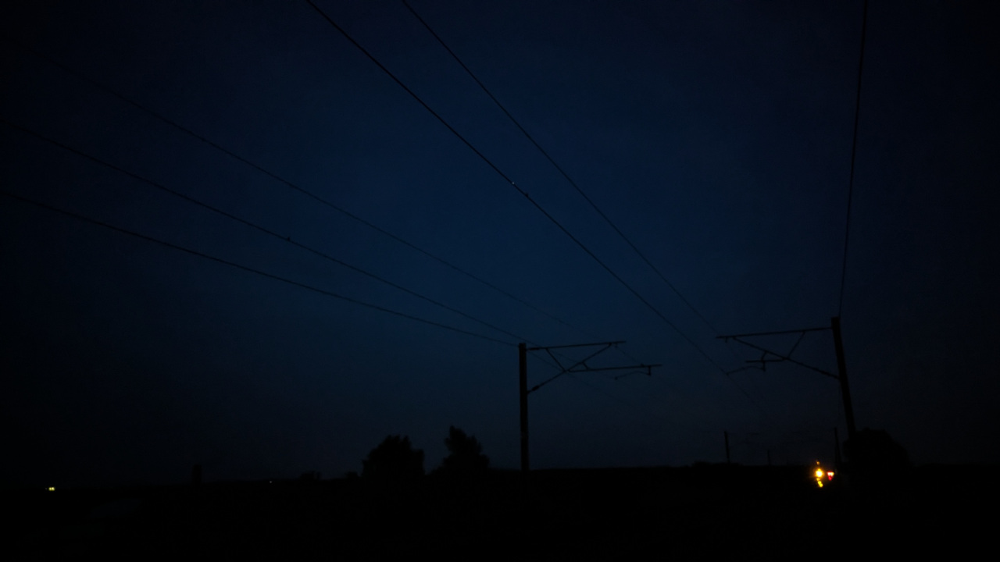

Here are some noteworthy photos I took using either my phone (Google Pixel 7) or camera (GoPro HERO9), I hope you'll enjoy viewing them as much as I enjoyed taking them ^w^


This image goes along with the reocurring theme of pointing the camera into the sky and hitting the shutter button, I really do need more interesting things to take pictures of, like lamp posts for example, if I could capture the ever decreasing presence of a lamp post boasting a traditional sodium lamp that would be cool...